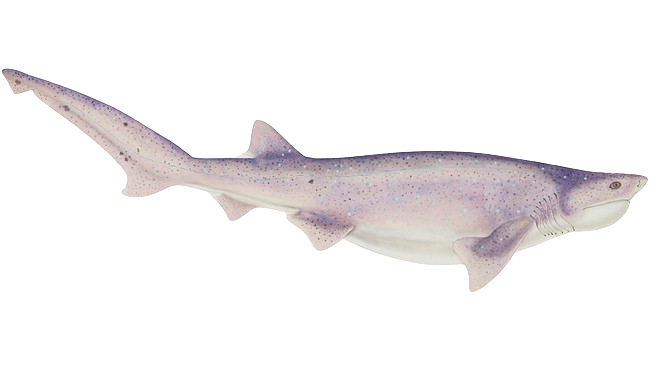

More than 1/2 of the global fatal attacks were caused by Tiger sharks.

"Antique fish Tiger Shark" © Fe. Clarke (Licensed under CC BY 4.0）
The second most fatal species is the White shark followed by the Bull shark. Whilst the Tiger shark is most commonly found
in United States, specifically in Hawaii, the white shark is generally encountered in California, South Africa and Western Australia.